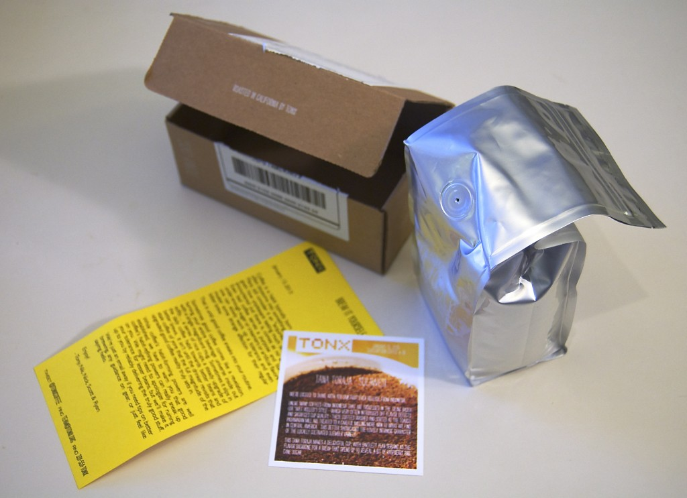

I’ve been subscribing to Tonx for my coffee for two months. Every two weeks I get a new bag of freshly roasted coffee.
But Michael, you live in Portland, the land of coffee. Why would you order coffee from the Internet?
It’s just that much better. Also it’s one less thing I have to think about when I make a shopping list.
The service and the product
I bought a gift subscription to Tonx for my parents for Christmas. While I was there, I decided to sign up for their free trial. The Tonx web site is painless to use, everything is easy to find, the ordering options are perfectly limited to just what a normal household of coffee drinkers would need.
Each time an order is about to be shipped, I receive an email including a big, fat, clickable tracking number to let me know when my coffee will arrive. The coffee comes in a small, minimal box, containing a resealable bag of coffee. It’s the best smelling mail you’ll get. The package also includes a small card describing the coffee you received and its origin. There is also a short letter from the staff at Tonx. It’s like an analog blog post about coffee.
Tonx sources and roasts just enough coffee for each shipment, so it’s always fresh. It’s also always different. So far each of my shipments have been a lighter or medium roast. This has been a revelation for me. The brewed coffee is slightly sweet, without sugar or milk, and often almost fruity. (Though this depends of course on the particular beans).
People, or coffee nerds, often compare coffee to wine. That’s not a bad comparison. I prefer to think of coffee like tomatoes. Tomatoes only grow well in a few places, so most tomatoes you find in your supermarket were picked green, shipped great distances, then artificially ripened. What you find in the produce section is something that looks like a tomato, but tastes like damp paper. Likewise most coffee you buy was picked and roasted weeks and weeks ago. Most coffee you buy in a grocery store is already stale. Tonx solves this problem by buying small batches, roasting, and shipping immediately. If coffee were tomatoes, Tonx coffee would be picked fresh, purchased at a roadside vegetable stand, and eaten in the car on the way home.
Only tiny complaints
As I mentioned above, Tonx sells subscriptions as gifts. Who wouldn’t want to get awesome coffee in the mail? The problem is that the gift subscription is a black box. Once the gift subscription has been purchased, Tonx provides only an order history (amount, date shipped, etc). They don’t provide tracking numbers for the shipments. They don’t provide a way to renew or add to the gift. Once it’s purchased, it’s gone.
When you buy your own subscription you have quite a few management tools available to you. You can pause shipments. You can change how much coffee you’re receiving. You can request a ‘boost’ – an extra bag- for your next shipment (for times when you might be having guests or just drinking more coffee). It would be great to have some of these features available for gift subscriptions as well.
Tonx offers a free sample of their coffee so you can try before you buy. The sample is a 2oz bag of coffee – enough to make two 32oz french presses. The sample order requires a valid credit card number and creation of an account on their website. This makes sense. If there wasn’t some small amount of commitment required, people would just order free samples until they went out of business. The free sample automatically converts into a subscription after a period of time. This is communicated effectively; it’s not sneaky in any way. It’s not uncommon for subscription services to work this way, but it creates a hassle for anyone who doesn’t want to commit to the subscription service after trying the sample. I’d prefer a couple of marketing emails over the threat of my credit card being charged due to inaction.
But these are tiny quibbles. The service is great. The product is great. The only real downside is that now I drink about 32oz of coffee a day.